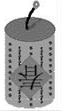
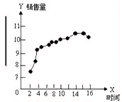
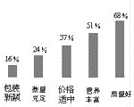
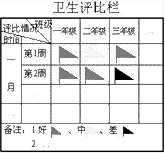
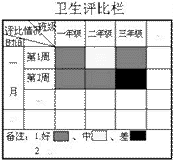
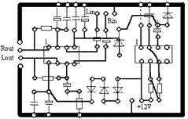
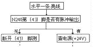

|
|
| 当前位置：电脑报电子版 > 1999 年 > 27 期 > OA专刊 > WPS97实用制作集锦(续) |
| 《 WPS97实用制作集锦(续) 》 |
| 例1.制作鞭炮 ⑴点击“椭圆”按钮，画一个大小合适的椭圆，并进入椭圆的“对象属性”，将“边线风格”下的“－实线”改为“空线”，将“边线色”下的“黑色”改设为“红色”，将“填充风格”下的“透明”改设为“填色”，将“填充色”下的“白色”改设为“深青色”利用复制功能制作鞭炮的下部分，但应将颜色作适当调整（和鞭炮圆柱面部分一致）。 ⑵点击“矩形”按钮，制作鞭炮的圆柱面部分，但应将“填充色”下的“白色”改设为“中紫色”。之后，将长矩形框放在两椭圆（上下）之间，距离调整好后，进入长矩形框“对象层次”，将长矩形框“下移一层”，最后，点击“选择”组合按钮“↑”，将制作好的鞭炮圈在虚线方框内，点击鼠标右键弹出浮动菜单，进入“组合”功能，于是由多个图形组成的鞭炮便组合成一个整体鞭炮了。并将组合图形选“在文字下”，这有利于下一步操作。 ⑶点击“插入/图文框（或图形框）”菜单，画一方框，并进入该方框的“对象属性”，将边框“宽度”设为1.0mm，将“边线风格”增加到2.0～3.5之间，将“边线风格”下的“－ ”改设为“ 花边（87种花边任选）”，将“边框风格/四边”下的“上边、下边和左边或右边去掉（只留 左边或右边）”，将“花边色”设为你需要的颜色，将“填充色”设为“中紫色”。重复上述操作或利用复制功能制作出4～6条花边，并根据爱好将花边调整到鞭炮圆柱面上。  ⑷点击“菱形”按钮，画一菱形框，并将菱形设为“红色”，将菱形“纸”移动到鞭炮的圆柱面上。 ⑸点击“文”按钮，插入“春”字（或其它字），将 春字的“字号效果”改为“自动”，其它根据爱好设置，最后将春字移到菱形“纸”上。 ⑹点击“曲线”按钮，画一段曲线，并作适当调整（进入对象属性）作为鞭炮的“引信”。 ⑺点击“直线”按钮，画2～3小段直线，并作适当调整作为“引信”的影子。 ⑻点击“椭圆”按钮，画2个大小不等的圆，并作适当调整作为燃烧着的“引信”火光。 ⑼重复第(2)步中的组合操作，将图形组合，即得到图1所示的鞭炮效果图。 例2.制作现代管理或办公中的各种关系图 ⑴点击“多边形”按钮，待“＋”字光标出现后，松开鼠标左键（画直线必须松开此键，否则，很难把直线画直），移动鼠标画一直角（坐标），并进入直角（坐标）的“对象属性”，将“端点风格”下的“闭合”改设为“分离”再改为“两端”，选取合适的箭头。  ⑵点击“直线”铵钮，在标尺（显示辅助信息）的指示下，均匀地在直角（坐标）上画出数据指示线（点）。 ⑶点击“文”按钮，对应直角（坐标）插入文字和数据。 ⑷点击“直线”按钮，根据数据大小，画多条所需的直线（连在一起），并交叉（隔一条）进入“对象属性”，将“两端”的端点改设为“圆点”。 当然，在第⑵⑶⑷步骤中，有许多制作技巧，如在⑷步中将所画的直线全部选定（但不要组合），并进入“对象属性”，将“两端”的端点改设为“圆点”，你会发现制作变得如此简单而精彩。 ⑸重复例1第(2)步中的组合操作，将所有图形组合在一起，即得到了经济预测中某产品月销售量的关系图，如图2所示。 例3.制作图文报表 为了反映几年或几十年来某种产品增长的速度，或者科室人员一年来推销产品的业绩，或某产品在广大用户中意向调查结果等，往往采用黑白或色彩图文报表的形式。 ⑴重复例2第⑴步，制作出坐标（有的不需要此坐标，在报表制作结束后，将其删除）。 ⑵点击“插入/文字框（图形框）”下拉式菜单，画一长条形方框，并进入文字框的“对象属性”，将“填充色”改为合适的颜色。完毕后，将制作好的长条框根据需复制多份，在坐标点的参照下，调整好各长条框的比例（高度），并定位。 ⑶点击“文”铵钮，插入说明文字和数字，图文排放合适后，并“组合”即可。图3所示的效果图是某产品在用户中的调查情况。 例4.制作卫生评比栏 ⑴按要求设计好表格，进入表格的“对象属性”，选择“表元斜线”下的斜线格式，并按要求输入文字。 ⑵点击“文”按钮，输入表头文字。用“文”功能的好处是可以将表格、图形和文字较好地组合在一起，便于移动和复制。 ⑶ 点击“多边形”按钮，待“＋”字光标出现后，松开鼠标左键，按画直线的方法，一次完成小红旗的制作，然后进入“对象属性”，选取合适的“边线色”颜色和“填充色”颜色，但要保证二种颜色的一致性。这就完成了小红旗的制作。用同样的方法制作出其它颜色的小旗（ 最好利用“复制/粘贴”功能）。 ⑷小旗摆放后，将所有图形组合起来即可，如图4（a）所示。 有时，利用WPS97提供的表格特殊的功能可以达到别开生面的效果。例如制作图4(b)所示效果的评比栏，其方法如下：先制作一份表格，将光标放在需要着色的表格（小格）内，然后双击表格并进入“对象属性”，选择合适的“边线色”和“填充色”即可。需要说明的是单击表格和双击表格，其“功能”和得到的效果是不一样的，大家不妨一试。 例5.绘制电路板图 绘制电路板主要采用“直线”、“曲线”、“连续曲线”和“多边形”工具功能键来实现。具体采用哪种“线”布线，这要看元件管脚在电路板上的位置而定。如元件较少或没有元件，且走“弯路”的线，可采用“多边形”布线，否则，应采用“直线”布线，对于有“弧”的地方，可采用“ 曲线”或“连续曲线”布线。布线完毕后，可将线路全部选定，并进入线路的“对象属性”，选择合适的“端点”和合适的“线条”（增加宽点数字）。如有的线条（路）始端或末端不需设置端点，可单独进行修改。当然，如果在图库中增加合适的圆孔（直径2.2mm，且填充白色）对绘制电路板图是有帮助的。最后将整个电路组合在一起，并选设在“在文字下”。根据情况可适当的插入元件符号或标注元件序号或阻（容）值，一般情况下，只需标注元件序列号即可。标注结束后，还应和电路板图组合在一起，以便于移动或复制。按此绘制的电路板图如图5所示。 例6.制作电气维修方框图 ⑴点击“插入/文字框”下拉式菜单，画一长方形方框，并在框内输入有用的文字，完毕后进入文字框的“对象属性”，点击“排文方式”按钮，将“框内留空”下“5（默认值）”改为“1（根据需要改设）”，或直接将“各边”改设为“无”。关闭后，调整方框的大小，使输入的文字处在框的正中间为宜。重复上述操作出其它文字框。 ⑵根据情况选用“直线”或“多边形”按钮，选用哪种“按钮”主要以布线简便和布线“整体”为主。例如对于制作带有“角（度）”的直线时，选用“多边形”按钮比“直线”按钮要好。因为“多边形”工具可以制作出几十个带有“角（度）”的直线，而且图形为一个整体，这对于调整和修改方框图是很方便的。 ⑶点击“文”按钮，在直线箭头旁插入文字，调整修改完毕后，将它们组合即可，如图6所示。 (河南 江辛) |
| 下载本期推荐软件 | 页 首 |
| 《电脑报》版权所有，电脑报网站编辑部设计制作发布 |